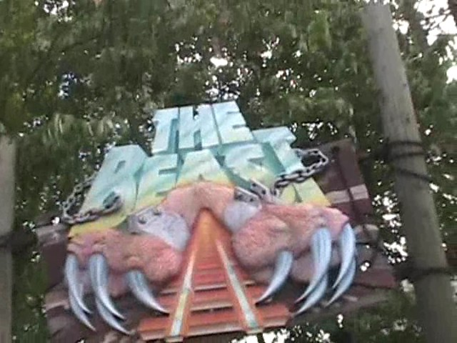

| |
Beast Review
We're here at Kings Island, where today, we'll be reviewing one of the most famous coasters in America. The Beast. This coaster is just about known by every freaking coaster enthusiast on the planet. This is another one of those super hyped up rides that I'm sure the Travel Channel would have sex with if it were possible. This is constantly being hyped as this amazing experience and is rated one of the top 10 coasters in the world by the Golden Tickets Awards. So obviously, if you can't tell, this ride is incredibly overrated (Never trust the Golden Ticket Awards). But just how overrated is it? Well, let's look and find out. After getting in the train and pulling down the lap bar, we are on our way. After going through a little bit of straight track, we begin to climb the first lifthill. Now as you're climbing up the lifthill, you notice something weird. THIS IS THE SLOWEST LIFTHILL EVER!! Seriously, a snail could pass us. A crippled snail could climb this lifthill faster than the train is. Well, at least for the first half. For halfway through the lifthill, it starts acting like a normal lifthill. Now normally, this wouldn't seem very fast, but compared to how fast you were going the first half, this now suddenly feels like Maverick's lifthill. Then finally, we reach the top. We're now back to our original crawling speed over the top. So yeah, Beast has the Goliath effect. Then, you go down the first drop. It's a very fun first drop that gives us a lot of speed and leads us straight into a tunnel. Then we are thrown back into the light and into a upward curve that shoots us to the sky. After that fun moment, we dip back into a drop, which is actually a fun drop that gives us some more butterflies in our stomach. This simply leads us up another hill before turning to the right. However, we then cut into the shed where we get two very unpleasent suprises. The first is straight track. This is nothing but pure straight track. And to make matters worse, they have trim brakes. Lots and lots of trim brakes. So yeah, I'm not impressed right now. However, there is some good news. And that is the location. I will not lie. The setting on the Beast kicks ass. This may very well be the best setting on any coaster I have ridden. In fact, if it wern't for this setting and the Beast was cruising through straight track filled with countless trims down the midway where everyone could see, I'd probably rip the Beast a new one. This leads us into a big long turn that just seems to be slowly turning. Eventually, we get into another drop! Yay! More speed! That was needed after all those trims. We then see some straight track that leads us to a left turn where we will "TAKE THE TUNNEL!!!" We're still taking the tunnel and being in a helix at the same time. But then the weirdest thing happens. As we're taking the tunnel, the tunnel just seems to fade away. Literally. We start out in the pitch black concrete tunnel. But then light begins to break through. Now I don't mean there's a light at the end of the tunnel, I mean light is coming through the sides of the tunnel and the walls are turning into straw and will soon be gone. After that, we start to head into another giant turn in the middle of nowhere. After that, we go through some straight track before going through another giant turn. Good god. This isn't a rollercoaster, it's a high speed tour of the middle of the middle of nowhere. It's like if someone put a rollercoaster in the barranca and just made it tour it by snaking through and showing off all the nothingness of nature it has to offer. We then see an upward incline. Wow. It's been a few minutes since I've seen one of those. It's not a hill. It's not steep enough. This is pretty much just a way for us to lose the rest of our speed before we go on with some straight track to the next lifthill. This lifthill is just a normal lifthill. No insanly slow speeds here. Once you reach the top of the lifthill, all sense of isolation is lost. You can tell you're in Kings Island and not in the middle of nowhere here. Then you go down a not steep, but still cool drop. You actually get some really good speed here. Then, we TAKE THE TUNNEL!!! AGAIN!!! Good god. What is up with all of Kings Island's rides having multiple tunnels. What could they possibly be thinking of when designing their rides. ;) Anyways, you enter the tunnel and begin to trash around and really get some laterals. Now, it's not "ZOMG!!!! DIS IZ DA GRATAST HEELIX EVAR!1! IZ LIK A ORGAZZM!!!1!!" But it's still a really cool and powerful helix. Though it is still a fake helix of death. After flying out of that tunnel, we are still flying through this giant awesome kickass fake helix of death when it goes back into another tunnel. After that, you simply go through some straight track and up an incline into the brake run. So yeah, the Beast is overrated, but I still found it to be a fun ride. But at the same time, I could sense that this ride used to be much better. So I can see why people who rode it in the 80s will say that the Beast is nothing compared to how it used to be. Though it's incredibly overrated, I'd still recommend riding the Beast while at Kings Island. It may be overrated, but it's unique and the best wooden coaster in the park. But hey. Look on the bright side. Papa Beast may be overrated, but he's still lightyears ahead of his now deceased son.
7/10
Location: Kings Island
Opened: 1979
Built by: Charlie Dinn
Last Ridden: June 28, 2018
Beast Photos



Home
|